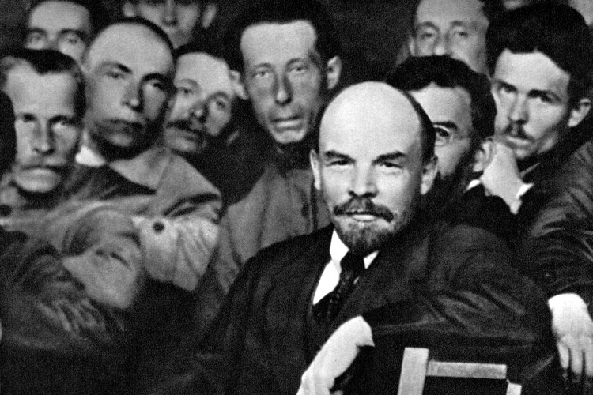
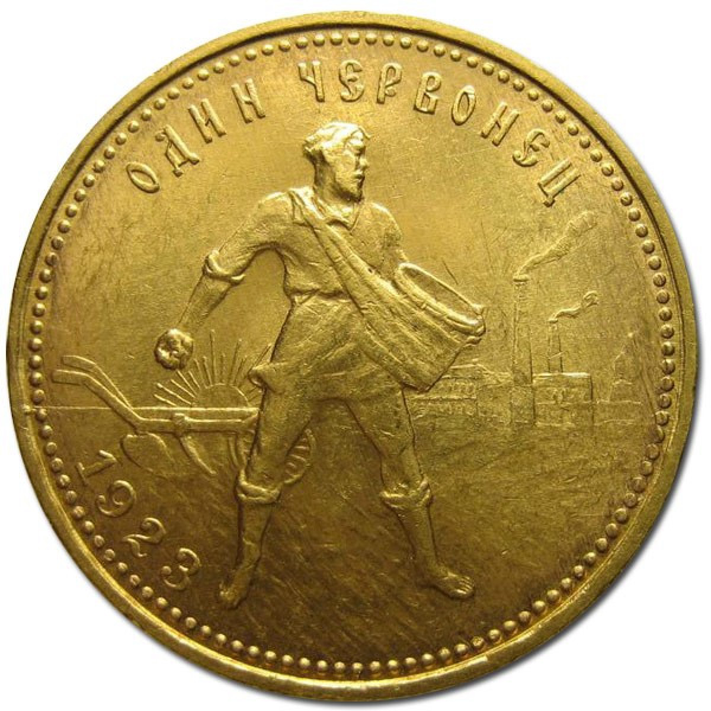

Основы нэпа были разработаны В. И. Лениным в 1921 г. Основные положения новой экономической политики, принятые X съездом РСДРП(б), состояли в следующем:

- разрешение частной торговли и мелких частных предприятий;
- допущение государственного капитализма в виде концессий, аренды мелких промышленных предприятий и земли под строгим контролем государства;
- замена продразверстки продналогом;
- перевод государственной промышленности на хозрасчет;
- замена натуральной заработной платы денежной по количеству и качеству труда.
Новая экономическая политика допускала некоторое развитие капиталистических элементов при сохранении Советским государством командных высот в народном хозяйстве. Целью нэпа было быстрое восстановление народного хозяйства после войны и разрухи и его социалистическая перестройка.
Переход к нэпу потребовал коренного изменения финансовой и налоговой политики и реформы всей налоговой системы, которую пришлось создавать практически заново.
При проведении налоговой реформы использовался опыт дореволюционной России, однако необходимо было учитывать совершенно новые социально-экономические условия страны, сложившиеся после завершения Гражданской войны:
- – почти полная национализация промышленности;
- – экономическое разорение в результате войны;
- – катастрофическое обесценивание рубля;
- – изменение классового состава населения.
Основные аспекты налоговой политики Советской власти на этом этапе подразумевали следующее решение главных задач:
- фискальной – добиться бездефицитного бюджета и прекратить денежную эмиссию;
- социально-политической:
- – перераспределить национальный доход и общественный капитал в пользу производств, более необходимых обществу;
- – накопить капитал для вложения в промышленность;
- – стимулировать производство и экспорт;
- – ограничить рост частного сектора;
- – защитить интересы беднейших слоев населения (рабочего класса и крестьянской бедноты).
Главным фактором финансовых преобразований, которые создали условия для успешного проведения налоговой реформы, была денежная реформа 1922–1924 гг., в результате которой была прекращена эмиссия советских денежных знаков и введен в обращение золотой червонец.

Основные черты новой налоговой системы можно описать следующим образом:
- основу налоговой системы составили прямые налоги, в первую очередь подоходно-поимущественные;
- классовый подход в установлении налоговой нагрузки на различные слои населения предполагал умеренное налогообложение трудящихся, прогрессивное повышение налогов на частнокапиталистические элементы, более мягкое обложение государственных и кооперативных предприятий в сравнении с частными, освобождение от налогов низкооплачиваемых рабочих и служащих, а также крестьянской бедноты, повышенное обложение предметов роскоши;
- умеренность обложения;
- косвенные налоги носили вспомогательный характер, так как по своей сути они несправедливы и не учитывают уровня благосостояния и платежеспособности.
Характерной особенностью налоговой системы этого периода являлась множественность налогов и сборов и многократность обложения торгово-промышленного оборота в различных его звеньях. К 1930 г. число платежей, взимаемых только с обобществленного сектора экономики, достигло 86.
Систему налогов и сборов в этот период составляли следующие виды обязательных платежей:
- прямые налоги: промысловый; единый натуральный; денежный подворный; сельскохозяйственный налог; подоходно-имущественный налог; единый общегражданский налог; квартальный налог; налог с наследств и дарений; индивидуальное обложение кулацких хозяйств сельхозналогом; военный налог; налог на сверхприбыль и др.;
- косвенные налоги: акцизы (12 видов); налог с доходов от демонстрации кинофильмов;
- пошлины: таможенные; патентные; судебные и др.;
- сборы: гербовый, патентный, канцелярский, прожиточный и др.;
- чрезвычайные налоги: единовременные налоги на нужды пострадавших от неурожая и др.
К 1926 г. доля поступлений от прямых налогов достигла 82% (в 1922 г. доля прямых налогов составляла 43%).
В сфере косвенных налогов также проводился классовый принцип налогообложения за счет установления повышенных акцизов на предметы роскоши. За счет этого бюджет получал более половины всех поступлений от косвенных налогов.
В 1924 г. был отменен сухой закон, действовавший в России с 1914 г. и восстановлена государственная монополия на продажу спирта в той же форме, в какой она была установлена в 1894 г. С. Ю. Витте. Причиной отмены сухого закона стала не столько потребность в дополнительных доходах, сколько массовое самогоноварение среди крестьян. В результате из хлебных ресурсов страны ежегодно "выпадало" около 80–100 млн пудов хлеба, что составляло около четверти всех хлебных ресурсов.
К концу 1920-х гг. Советское правительство смогло практически полностью восстановить народное хозяйство, при этом за счет принимаемых мер, в том числе налогового характера, из него были почти полностью вытеснены частно-капиталистические элементы. В стране с 1927 г. был взят курс на коллективизацию.
Политика коллективизации и индустриализации сопровождалась многими трудностями и жертвами, однако ее результатом стала победа СССР в Великой Отечественной войне над силами объединенной Европы.